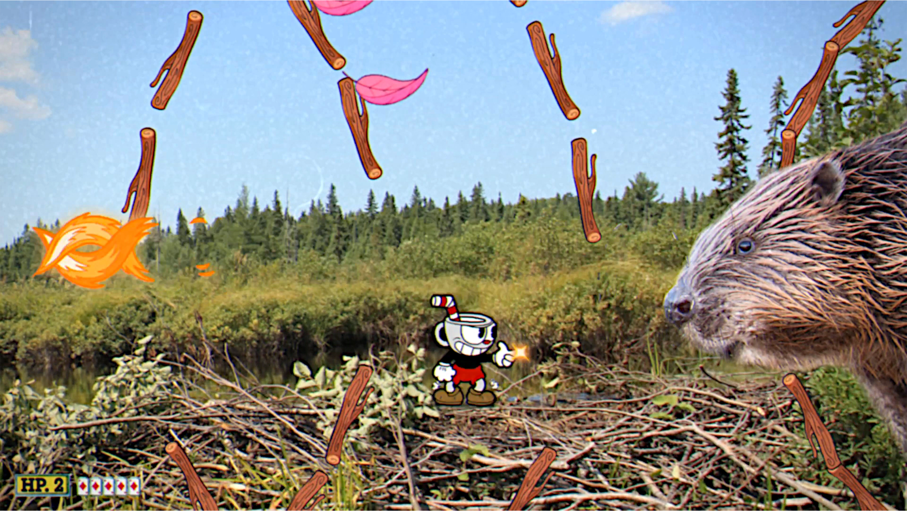
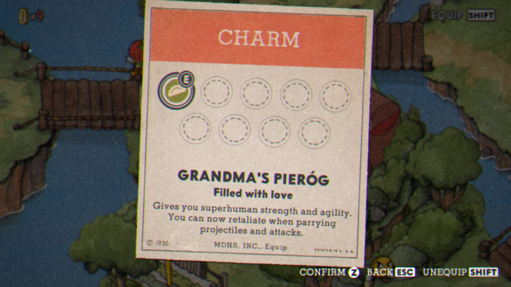

Boberhead
Boberhead is an April Fools mod for the game Cuphead - an indie 2D action game focusing on difficult boss fights. The mod introduces a new item and a custom boss.


Boberhead is an April Fools mod for the game Cuphead - an indie 2D action game focusing on difficult boss fights. The mod introduces a new item and a custom boss.

